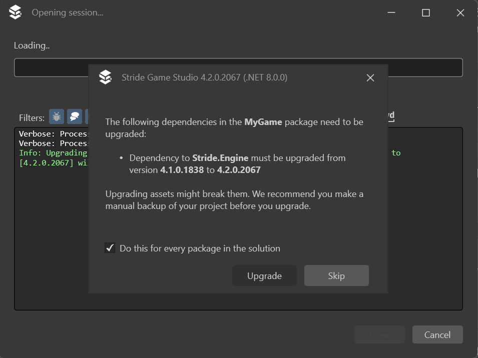
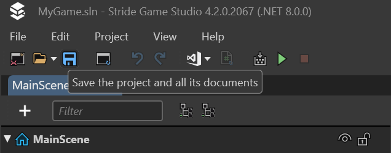

Обновление Stride
Beginner
Обновление Stride — это простой процесс, но важно внимательно следовать шагам, чтобы обеспечить плавный переход. Ниже приведены рекомендации по обновлению как движка Stride, так и ваших существующих проектов.
Note
Приведенные здесь инструкции можно использовать в качестве общего руководства по обновлению любой новой версии Stride.
Обновление Stride
- Обновление Visual Studio 2022: Убедитесь, что у вас установлена последняя версия Visual Studio 2022. Это имеет решающее значение для совместимости с последней версией Stride. После обновления Visual Studio перезагрузите компьютер, чтобы изменения вступили в силу полностью.
- Инструкции Stride Launcher: Откройте Stride Launcher. Следуйте инструкциям, чтобы обновить или установить плагин Visual Studio для Stride. Этот шаг необходим для интеграции последней версии Stride с вашей средой разработки.
- Перезагрузите снова: После завершения установки или обновления плагина Visual Studio перезагрузите компьютер еще раз. Это поможет убедиться, что все компоненты правильно загружены и готовы к использованию.
Обновление вашего проекта
- Контроль версий: Прежде чем приступить к обновлению, убедитесь, что ваш проект находится под контролем версий и все текущие изменения зафиксированы. Это обеспечивает подстраховку, позволяющую при необходимости вернуться к предыдущему состоянию. Если вы не используете контроль версий, убедитесь, что у вас есть резервная копия проекта.
- Открытие проекта: При открытии проекта, созданного в более старой версии Stride, появится диалоговое окно с предложением обновить проект. Обязательно установите флажок применить обновление ко всем пакетам в решении. Кроме того, позже вы сможете проверить, были ли обновлены все пакеты, проверив файлы вашего проекта, в частности файлы
.csproj.  Диалоговое окно с запросом на обновление проекта в Stride. - Сохранение проекта: После того, как Stride обновит проект, крайне важно сохранить его немедленно. Этот шаг предотвращает нахождение проекта в неопределенном состоянии и закрепляет изменения, внесенные во время обновления. 
- Перестроить и перезагрузить: Наконец, перестройте проект и перезагрузите сборки. Это гарантирует, что все компоненты обновлены и правильно синхронизированы с новой версией Stride.
Выполнив эти шаги, вы сможете плавно перейти на последнюю версию Stride, в полной мере используя новые функции и улучшения, которые она предлагает. Помните, что эти процедуры предназначены для обеспечения беспроблемного обновления и защиты вашего проекта от потенциальных проблем.